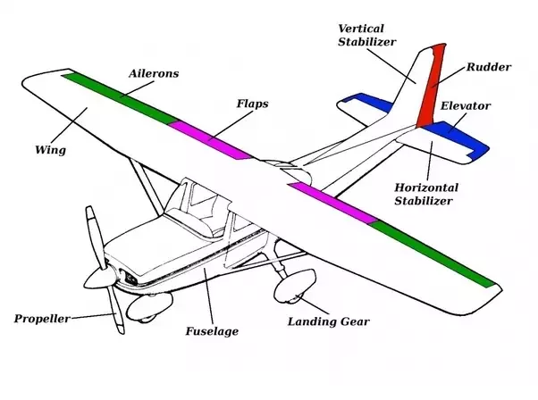

AI Hype
In many respects, the hype surrounding ChatGPT is merely history repeating itself. People once believed that transistors would build computers that could mimic humans.
Others believed that SQL and Power Query would eliminate the need for software developers. It will never happen, there will always be a need for someone to communicate with computers.

Autopilot software
Autopilot software is the combination of several programs working together: GPS, transponder communication, physics stability.
Windows Operating System
The Windows OS prioritises user friendliness and offers a broad range of features.

Computer Architecture - why does restarting the computer work so well when troubleshooting?
Most memory in a computer is erased when the device is switched off.


Network Technologies
Why are virtual networks more efficient and easier to debug? In a physical network switches can only be changed manually. If nodes A and B are connected, but you want A to be connected with C, you have to change the wiring. But in a virtual network, you simply modify the access control list to connect A and C.
Main Content
Links below:
Index